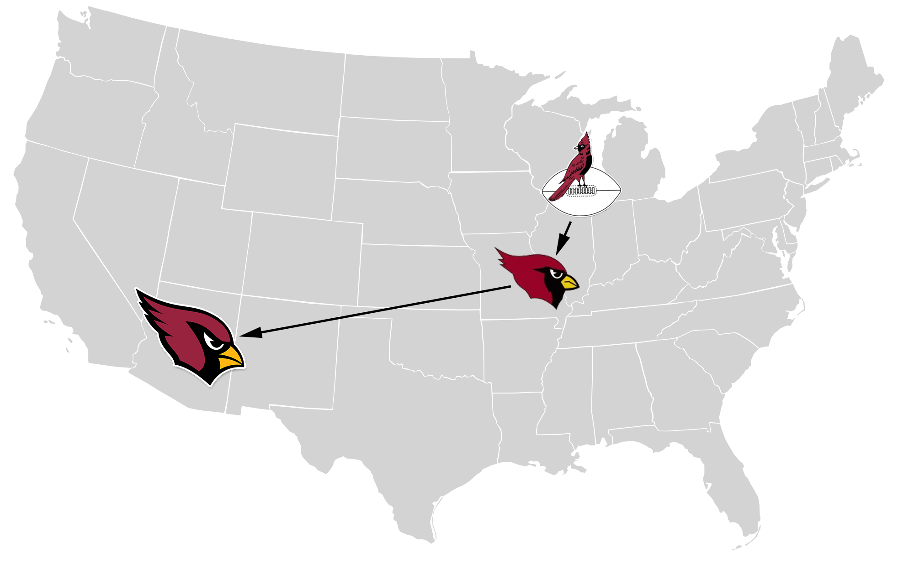

The Journey
The Arizona Cardinals are a professional football team that currently play in Glendale Arizona. They were founded in 1898 as the Morgan Athletic Club in Chicago Illinois. In 1920 they helped form the National Football League under the name Chicago Cardinals. In 1960 the team moved to St. Louis and were known as the "St. Louis Football Cardinals". In 1988 the team moved to Phoenix and played as the Phoenix Cardinals until 1994 when the changed there name to the Arizona Cardinals. Today the team plays in State Farm Stadium that is located in nearby Glendale Arizona.
| Location | Start | End |
|---|---|---|
| Chicago | 1898 | 1959 |
| St. Louis | 1960 | 1987 |
| Arizona | 1988 | Present |